1 Antar Muka LUMENS
Antar Muka LUMENS
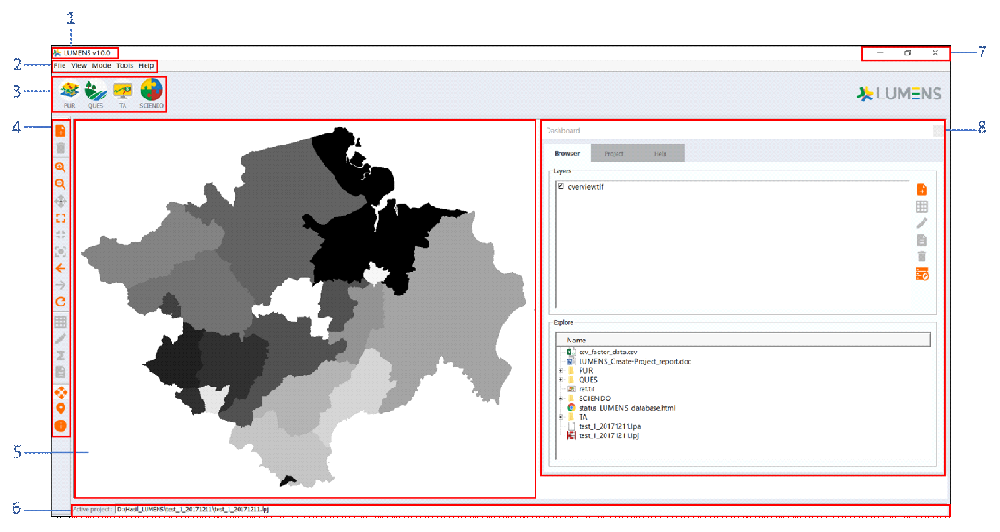
Sebelum menggunakan LUMENS, pertama perlu diketahui fungsi dari masing-masing menu, icon dan bagian LUMENS.
Gambar 1.1 Nama dan fungsi dari masing-masing bagian jendela LUMENS
Keterangan:
- Version information : Informasi mengenai versi LUMENS yang digunakan
- Menu bar : berisi menu utama LUMENS yang berisi File, View, Mode, Tools dan Help
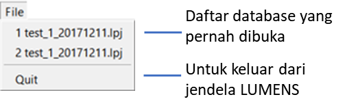
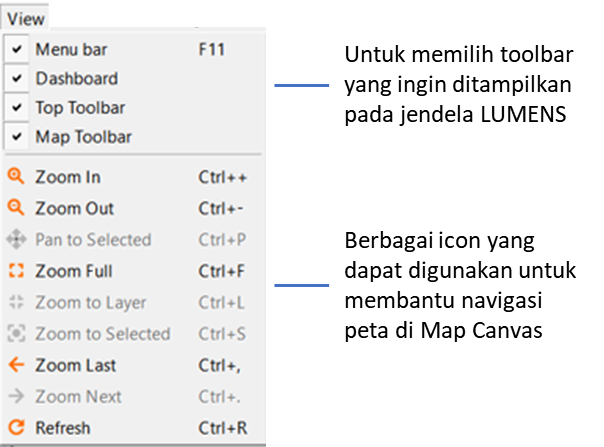
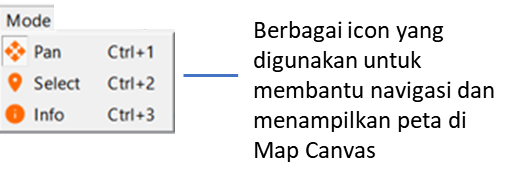
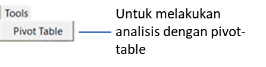
- Ikon Modul LUMENS : empat icon dari Modul utama LUMENS
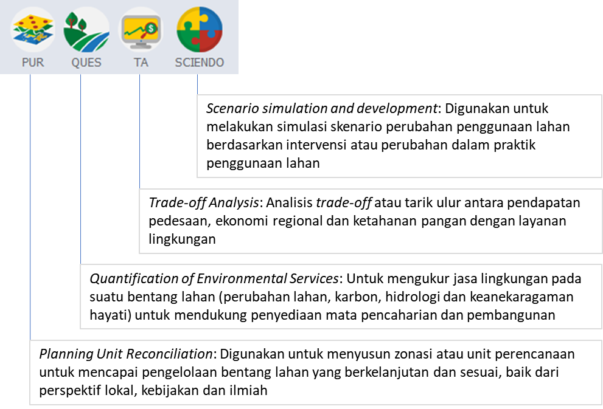
- Map toolbar : berisi icon-icon yang digunakan untuk mendukung analisis dengan menggunakna LUMENS
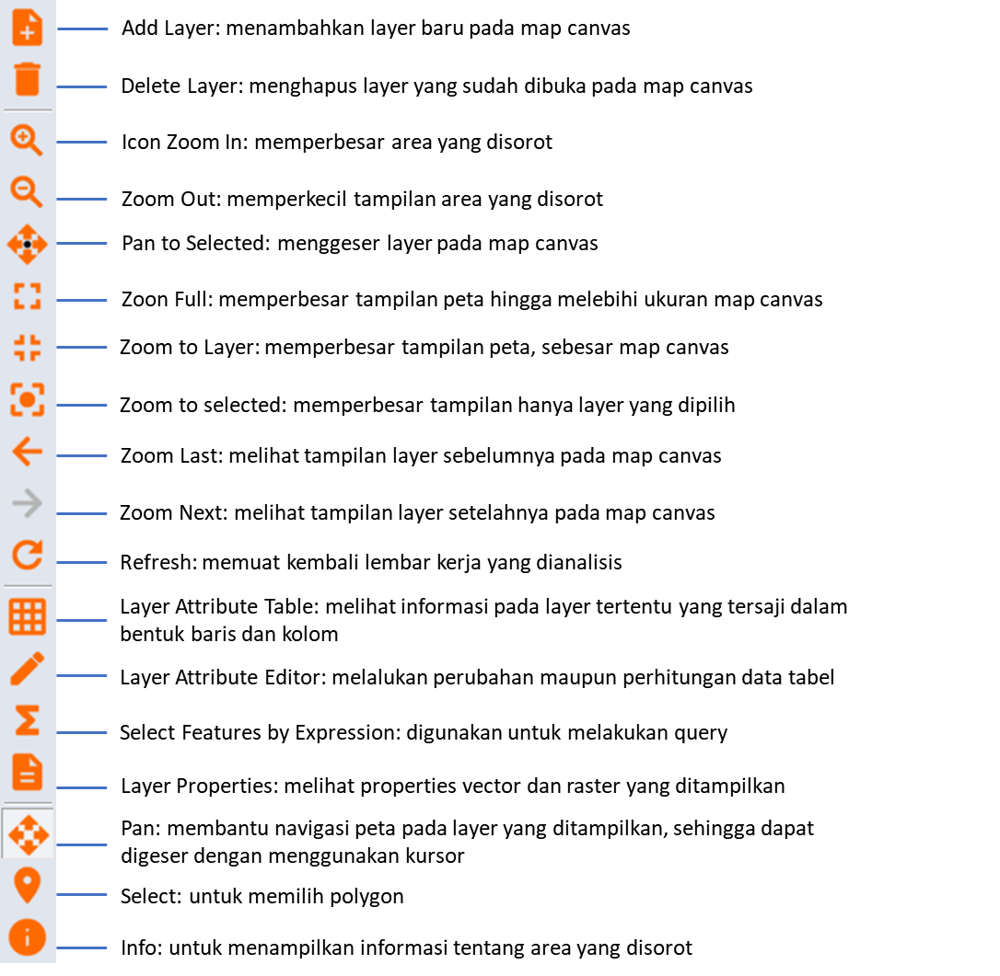
- Map canvas : Area kerja yang berfungsi untuk menampilkan peta yang sedang dibuka
- Active project : Menunjukkan nama serta lokasi project yang sedang terbuka pada jendela LUMENS
- Customized window: Ikon untuk menutup, memperbesar/memperkecil, dan menyembunyikan jendela LUMENS yang sedang aktif
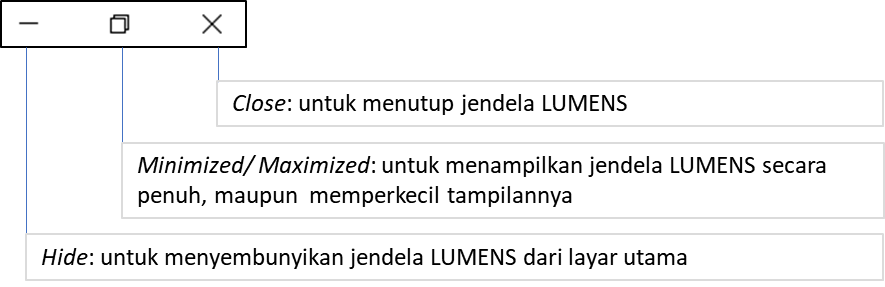
- Dashboard : Jendela yang berisi Browser dan Project
Jendela Browser berfungsi untuk memanggil data yang ingin ditampilkan pada Map Canvas dan menampilkan data apa saja yang sudah dimasukkan ke dalam database yang sedang dibuka
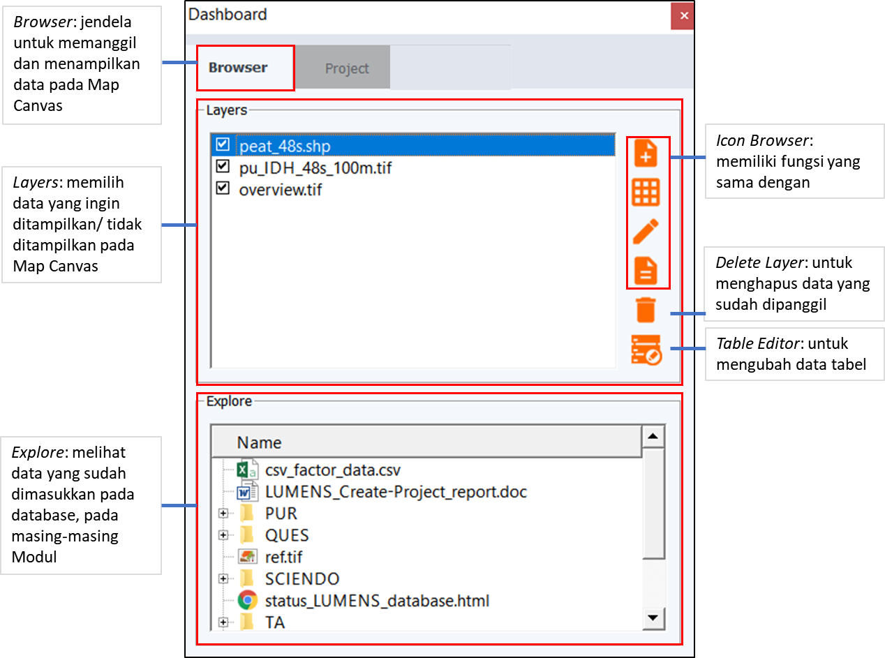
Gambar 1.2 Nama dan fungsi dari jendela Browser
Jendela Project, memiliki fungsi utama untuk membuat LUMENS database. Jendela ini memiliki tujuh icon untuk membantu pembuatan LUMENS database, yaitu: New, Open, Close, Export, Add data, Remove data, dan Project status.
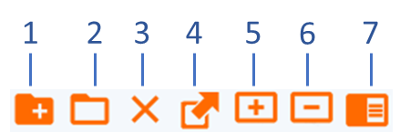
Keterangan:
- New : untuk membuat database baru
- Open : untuk membuka database yang sudah ada
- Close : untuk menutup database yang sedang terbuka pada Map Canvas
- Add data : untuk menambah data (raster, vector, table) ke database LUMENS
- Remove data: untuk menghapus data yang telah ditambahkan pada database
- Project status: untuk melihat daftar data yang sudah ditambahkan pada database dan melihat analisis apa saja yang sudah dijalankan
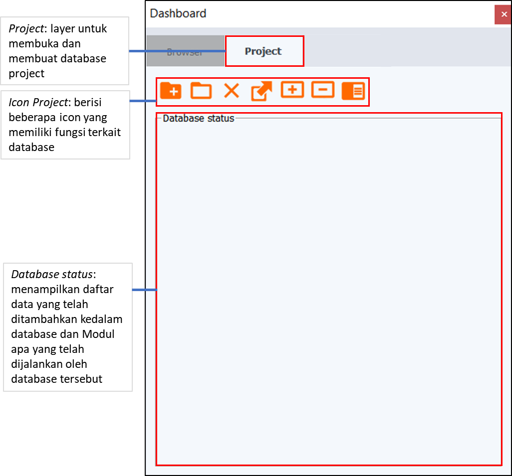
Created with the Personal Edition of HelpNDoc: Free help authoring tool